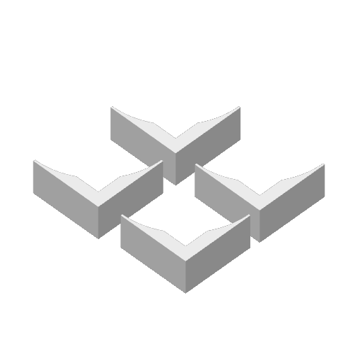
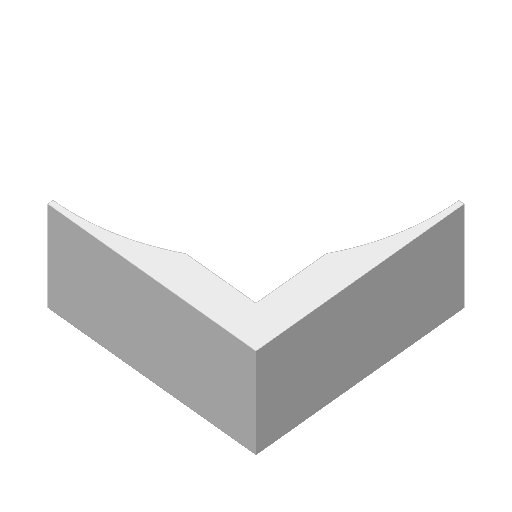

Overview
A working fieldbook of a wind tunnel and its instruments. Rithwik leads the build and research; Rithika documents the work, proposed the dry-ice approach, helped review code, and explores CubeSat possibilities. The latest account is a user-reported update received 13 October 2026, not an independently verified performance test.
Motivation & background
The project connects an observable flow with the harder question of measuring forces reliably. The tunnel is a platform for learning aerodynamics, instrumentation, fabrication, and analysis together.
Prototype development
The October 3 update reports a built two-fan tunnel, printed inlet/outlet, plexiglass body, and printed supports. The October 13 update adds a measurement stand still being developed. A 3D model to accommodate airfoils and model aircraft is planned. Updated stand CAD and source will be added to GitHub later; existing files remain the linked evidence.
Results & data
Rithwik reports that the dry-ice setup produces a smooth visible flow into the inlet. This is a qualitative build observation. No measured aerodynamic results or completed calibration records have been supplied. The available CSV rows below are software sample input only.
Lessons & open learning
The documented iteration separates making a phenomenon visible from measuring it. The change in visualization method solved a reported practical obstacle; reliable force measurement remains the next learning task. More detailed personal reflections can be added as they are recorded.
Future improvements
Finish the stand model, document how airfoils and model aircraft attach, complete calibration, publish the updated source and original photographs, and collect repeatable measurements with their limitations.
Technical Deep Dive Requirements, methods, validation & limitations
Requirements & constraints
The stand needs to support airfoils and model aircraft while enabling lift and drag measurement. Sensor calibration, mounting geometry, repeatable conditions, and an uncertainty estimate remain necessary. Numerical design requirements and acceptance thresholds have not yet been supplied.
Design concepts
The reported tunnel has a plexiglass test body with printed supports and inlet/outlet components. Dry ice is placed in water in front of the inlet. Air is blown into that setup, and an outlet fan draws it through the tunnel. The new stand uses differential pressure, load cells for lift and drag, and a BME280 for environmental conditions. The exact pressure-sensor model remains unconfirmed.
Engineering trade-offs
Repeated smoke-system setbacks prompted a change in visualization method. Rithika proposed dry ice. A visible flow pattern helps observe movement, but it does not by itself establish flow uniformity, airspeed, or measurement accuracy. The stand must also balance mechanical support with interference in the flow; that trade-off is still open.
Calculations & simulations
The earlier Arduino code contains a modeled differential-pressure channel with simulated noise and conditioning. It is an inspectable software artifact. A verified pressure-to-speed calculation requires an appropriate pressure measurement, air-density assumptions, and a calibrated sensor. No validated CFD, airspeed, lift, or drag result is currently available.
Experimental methodology
Proposed next procedure: document the final stand and wiring; calibrate each force channel against a known reference; establish zero and repeatability; record ambient conditions; then define controlled comparison runs. This is a planning outline, not a performed experiment or an approved calibration protocol.
Problems & failed attempts
The original smoke approach required repeated changes to materials, filaments, air pumps, and the setup. The shift to dry ice in water is the documented response. A dated run-by-run failure log and photographs are still needed to make those iterations reproducible.
Verification & validation
Repository code, 3MF archives, and embedded previews can be inspected. Physical accuracy is not established by those files. Outstanding evidence includes updated wiring and stand CAD, calibration records, repeat trials, reference measurements, and an uncertainty budget.
Limitations
The latest stand is unfinished. No completed airfoil/aircraft mounting model, exact new pressure-sensor part number, flow-uniformity map, or force dataset has been supplied. The GitHub record predates the latest reported hardware configuration.
Follow a reading.
Explore the earlier firmware architecture. Each stage exposes an assumption worth checking.
EnvironmentBME280
Temperature, humidity, and environmental pressure enter the earlier logger. Sensor accuracy is not established by the source code.
Pressure modelAnalog input
The earlier pressure channel includes simulated noise and conditioning. It should not be described as a validated physical measurement.
AcquisitionArduino logger
The loop schedules CSV output every two seconds. This is a configured interval, not a measured timing benchmark.
RecordSD / CSV
Timestamped raw and conditioned values are retained as source-defined fields. The newer force-measurement stand is not represented by this earlier architecture.
Source-based architecture, not a validated wiring schematic. The newer load-cell stand is still being developed.
Inspect the print artifacts.
The four archived 3MF files predate the latest stand. The exact fabricated versions are not established.



Read the data.
Sample input onlySample input only. Exact values from the grapher’s existing three-row CSV fixture; not measured aerodynamic performance.
Focus or point to a data point for its value.
| Time | Temperature (°C) | Humidity (%) | Pressure (hPa) |
|---|---|---|---|
| 10:00:00 | 23.4 | 41.2 | 1008.6 |
| 10:01:00 | 23.5 | 41 | 1008.7 |
| 10:02:00 | 23.6 | 40.9 | 1008.8 |
Methodology & limitations
Values reproduced from the earlier source record without smoothing, extrapolation, or correction. Elapsed time is calculated from the sample timestamps.
Three example rows demonstrate the input format. They do not establish a physical trend, calibration, lift, drag, or tunnel performance.
Inspect the original CSVSources & related documents
- Aerodynamics Research Lab Rithwik & Rithika Gummadi
- Arduino environmental and pressure logger
- Logger architecture notes
- Current honeycomb 3MF archive
- Earlier honeycomb archive
- Honeycomb holder 3MF archive
- Support corners 3MF archive
- Python CSV grapher source
- Original sample.csv fixture
- Data correction prototype
See the provenance record for source boundaries and attribution.